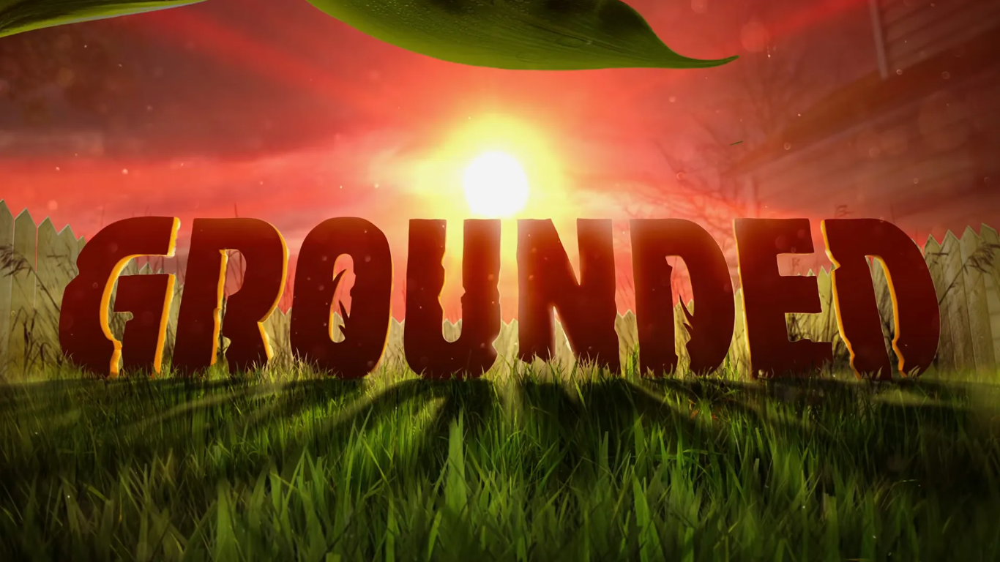
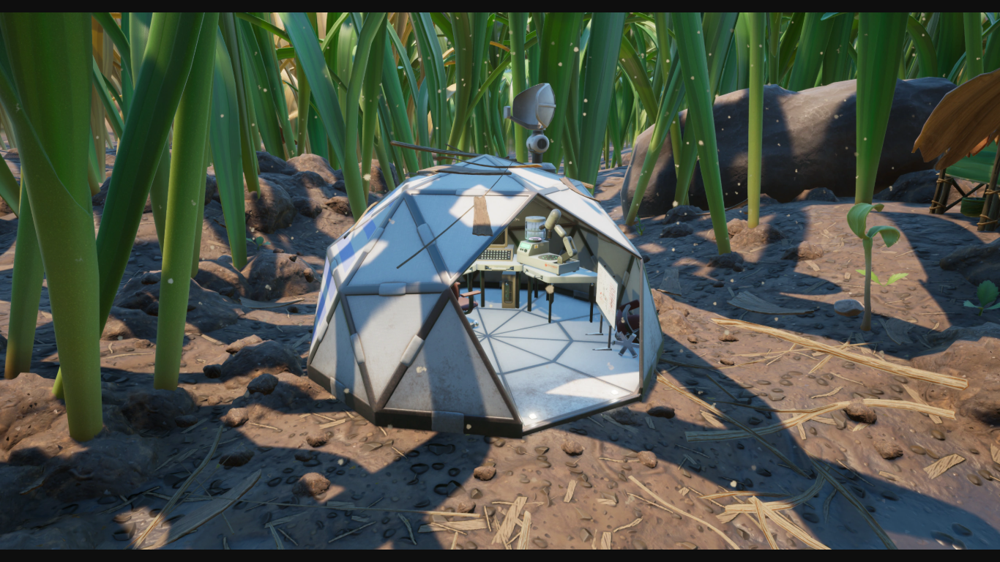

This website will assist you with the number of materials to build an optimal base in Grounded with everything you will posssibly need to start and progress.

The first thing you'll see when you get in to your save file is the kid case and an exit out of the cave. You don't need to search around the case since their's nothing of use there. The only time you would need to head back to the kid case is if you unglitched your backpack at the kid case if its unreachable.
A good starter base would probably be either near a field station or by a lab. Having your base next to a lab or field station enables you to be able to have a Surveyor scanner (to scan for items) a comupter(unlocks buildings, weapons, food items, and craftable items) and a reasource analyzer (to scan reasources collected for new craftables).

| Item/Building Name | Amount of Materials Needed | What it Does |
|---|---|---|
| Grass Floor | 4 grass planks | a place to build on |